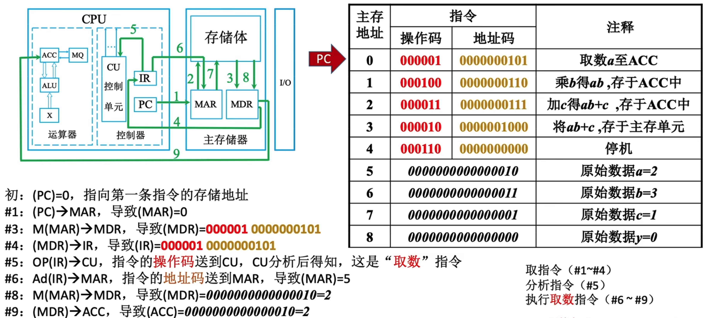

# 第一章 计算机系统概述
apple A13 制造工艺 7nm 指的是每个逻辑元件 (晶体管) 宽度不超过 7nm。其拥有 85 亿个晶体管
概念知识点:
- 机器字长：计算机一次整数运算所能处理的二进制位数
# 计算机硬件组成
冯诺依曼计算机特点
- 五大部件：输入设备、输出设备、存储器、运算器、控制器
- 指令和数据以同等地位存在存储器中，可以按地址访问
- 指令和数据用二进制表示
- 指令由
操作码和地址码组成 - 存储程序
- 以
运算器为中心
现代计算机特点
- 以
存储器为中心 - 整合了
运算器和控制器= CPU - 主机 = CPU +
主存储器(内存)
存储单元： 每个存储单元存放一串二进制代码
存储字 (word): 存储单元中二进制代码的组合
存储字长：存储单元中二进制代码的位数
存储元：即存储二进制的电子元件 (电容)，每个存储元可存储 1bit
# 主存储器的基本组成
主存储器的工作方式是按存储单元的地址进行存取，这种存取方式称为按地址存取方式 (相联存储器是按内容访问的)
地址寄存器 MAR 存放访存地址，经过地址译码后找到所选的存储单元。
MAR 用于寻址，其位数对应着存储单元的个数。如 MAR 为 10 位，则有 2 的 10 次方 = 1024 个存储单元，记为 1K。
MAR 的长度与 PC (控制器中的程序计数器) 长度相等。
MDR 位数与存储字长相等，一般为字节的二次幂的整数倍。
虽然 MAR 和 MDR 是存储器的一部分，但现代 CPU 中却存在与 CPU 中，另外高速缓存 (Cache) 也存在与 CPU 中。
# 运算器的基本组成
运算器内还有 程序状态寄存器(PSW) , 也称为标志寄存器，用于存放 ALU 运算得到的一些标志信息或处理机的状态信息。
# 控制器的基本组成
取指令 (PC) 与分析指令 (IR) 可以统称为取指阶段
执行指令 (CU) 可以称为执行阶段
PC 用来存放当前欲执行指令的地址，可以自动加 1 以形成下一条指令的地址，它与主存的 MAR 之间有一条直接通路。
IR 用来存放当前的指令，其内容来自主存的 MDR。
指令中的 操作码 OP (IR) 送至 CU， 用以分析指令并发出各种微操作命令序列
指令中的 地址码 Ad (IR) 送至 MAR，用以取操作数
Cpu 和主存之间通过一组总线相连，总线中有地址、控制和数据 3 组信号线。
地址总线：MAR 中的地址信息会送到地址线上，用于指向读 / 写操作的主存存储单元；
控制线中有读 / 写信号线，指出数据是从 Cpu 写入主存，还是从主存读出到 Cpu。
根据是读操作 / 写操作来控制将 MDR 中的数据送到数据线上还是将数据线上的数据接收到 MDR 上。
取数 a 到 ACC 的过程

- PC 指向第一条指令的存储地址 MAR
- MAR 去存储体中取指令 (操作码和地址码)
- 指令取完后放在 MDR 寄存器中
- 将指令取到 IR 中
- IR 取出指令的操作码，CU 分析指令
- 获取 IR 中的地址码送到 MAR，MAR 解析数据地址后，MDR 从存储体中读取数据
- 这时将数据发送到 ACC 去
# Cpu 性能指标
- IPS (Instructions Per Second): 每秒执行多少条指令
- CPI (Clock cycle Per Instruction): 执行一条指令所需的时钟周期数
- Cpu 主频: Cpu 内数字脉冲信号振荡的频率
IPS = 主频 / 平均 CPI
# 第二章 数据的表示和运算
为什么计算机采用二进制运算
- 可使用两个稳定状态的物理器件表示
- 0,1 正好对应逻辑值假、真。方便实现逻辑运算
- 可以方便地使用逻辑门电路实现算术运算
二进制 <--> 八进制、十六进制
- 二进制 -> 八进制【3 位一组，每组转换成对应的八进制符号】
- 二进制 -> 十六进制【4 位一组，每组转换成对应的十六进制符号】
- 八进制 -> 二进制 【每位八进制数转换成 3 位二进制】
- 十六进制 -> 二进制 【每位十六进制转换为 4 位二进制数】
十进制 -> 任意进制
![" 十进制转任意进制小数部分 "](../../../images/tentotwo2.png" 十进制转任意进制小数部分 "
或者使用拼凑法
# RAM
# Cache 与主存地址映射
Cache 行：即 Cache 块，是 Cache 与主存之间传送数据的基本单位
组相连映射
将 Cache 空间分成大小相同的组，主存的一个数据块可以装入一组内的任何一个位置，即组
间采取直接映射，而组内采取全相联映射。设置中每组有 N 个 Cache 行，称为 N 路组相联。
为什么使用多级缓存？？？